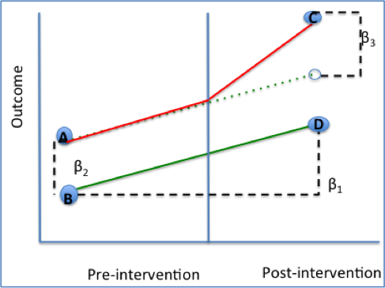
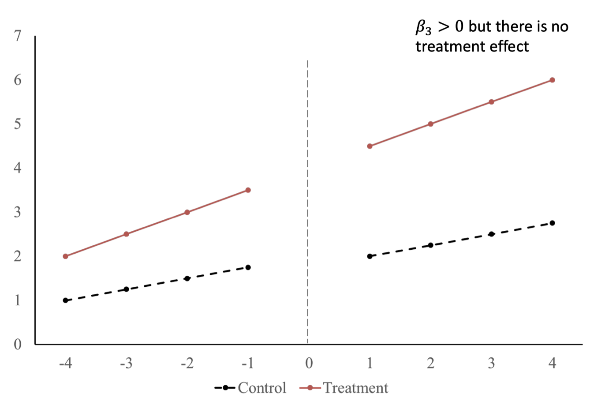
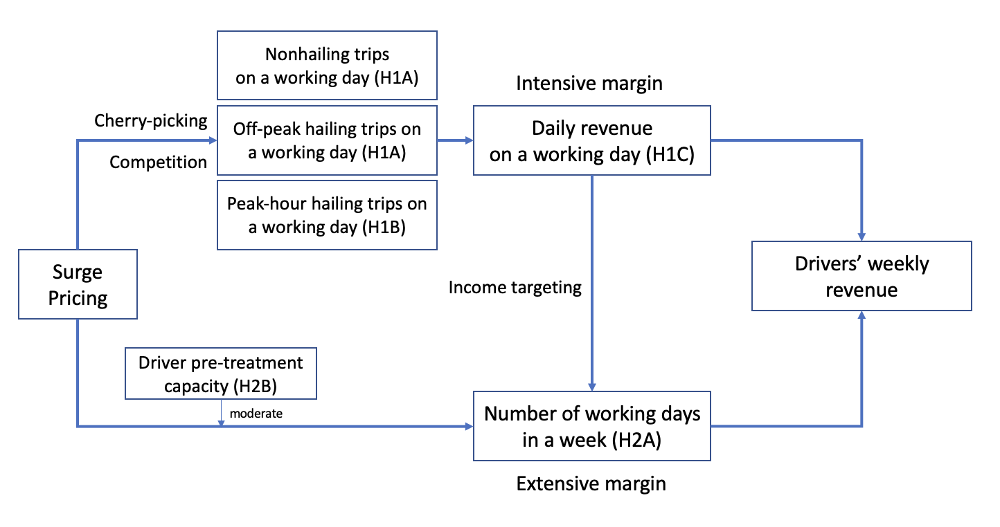
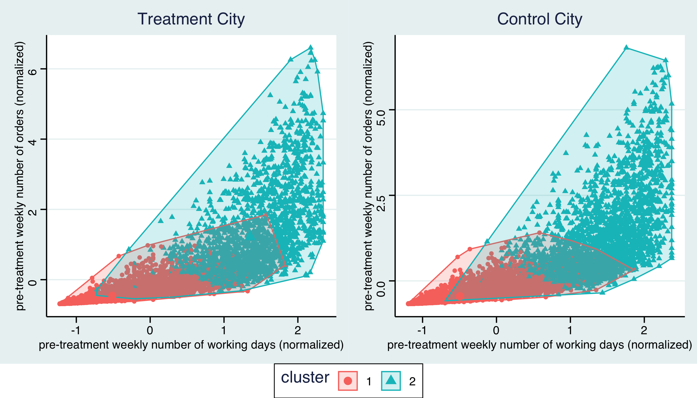

| y | x1 | id | period | post | treat |
|---|---|---|---|---|---|
| 2.8753063 | 0.5365377 | 1 | 1 | 0 | 1 |
| 1.8606527 | -3.0431894 | 1 | 2 | 0 | 1 |
| 0.0941652 | 5.5768439 | 1 | 3 | 0 | 1 |
| 3.7814749 | -2.8300587 | 1 | 4 | 0 | 1 |
| -2.5581996 | -5.0443544 | 1 | 5 | 0 | 1 |
| 1.7287324 | -0.6363849 | 1 | 6 | 1 | 1 |
| 6.2842363 | -2.1298837 | 1 | 7 | 1 | 1 |
| 4.7668878 | 3.4918558 | 1 | 8 | 1 | 1 |
Class 17 Difference-in-Differences Design
1 Natural Experiment
1.1 “Real” Experiments: RCTs
- RCTs are the gold standard of causal inference.
- In an RCT, the treatment is randomized and hence not correlated with any confounding factor.
- In practice, however, it’s challenging to implement a perfect RCT.
- Crossover and spillover
- Costly in terms of time and money
- Potential moral issues1
1.2 “Natural” Experiments
A natural experiment is an empirical study in which individuals are exposed to the experimental and control conditions that are determined by nature or by other factors outside the control of the investigators. The process governing the exposures arguably resembles random assignment.
Natural experiments are observational studies using secondary data and are not controlled in the sense of an RCT.
1.3 “Natural” Experiment Examples
- A new government regulation (say, a local COVID-19 lockdown or GDPR) is implemented in city A but not the neighboring city B
- Residents in city A are treated due to uncontrollable forces but residents in city B are untreated
- MSc students get Merit honor for getting 69.9 and Disctinction for getting 70 score
- Students can definitely work harder to get higher scores, but the 0.1 score may not be controllable by students
1.4 Comparison: RCT & Natural Experiment
RCT
Assignment of treatment is purely randomized
Treatment is under control of a researcher
Primary data
We can proactively design an RCT for the research questions we have
Natural Experiment
Assignment of treatment is “as-if” randomized
Treatment is not controlled by a researcher
Secondary data
We can only look for natural experiments from current data that fit our questions
2 DiD on Primary Data
2.1 A Motivating Example
In the RCT lecture, we learned how to design an A/B testing in 5 steps to help Tom evaluate the causal impact of a loyalty program on customers’ retention rate.
We discussed that the unit of randomization should not be at the region level.
- East London versus West London randomization would cause failed randomization checks.
However, in reality, individual-level randomization may be too costly or infeasible, and we may need to do a region-level A/B testing.
In this case, how can we design the A/B testing to avoid failed randomization?
2.2 Proposal 1: Before-After Comparison on East London
- Keep status quo (no loyalty program) in East London for 1 month; collect customer retention data for this month.
- Then Introduce the loyalty program in East London; collect customer retention data for another 1 month.
- Compare the before-after difference in retention rate by a t-test or running the following regression:
\[ Retention_{i, t}=\alpha+\beta_{1} Post_{i}+\mu_{i, t} \]
Can this difference tell us the causal effect of the loyalty program?2
- No, because the variable \(post\) is confounded with seasonality. Even without the loyalty program, customers’ retention may already change with time due to seasonality. So this simple before-after difference cannot tease out the causal effect of the loyalty program.
2.3 Proposal 2: East-West London Comparison
- Randomize which region (East London/West London) would receive the loyalty program, and then introduce the loyalty program in the treatment region.
- Collect customer retention data for both regions for a month.
- Compare the treatment-control difference in retention rate by a t-test or running the following regression:
\[ Retention_{i, t}=\alpha+\beta_{1} Treated_{i}+\mu_{i, t} \]
Can this difference tell us the causal effect of the loyalty program?3
- No, because customers in East London and West London are intrinsically different. Even without the loyalty program, we may already see a difference in their retention rate. So the simple treatment-control comparison cannot tease out the causal effect of the loyalty program.
2.4 Proposal 3: Difference-in-Differences
- Keep status quo (no loyalty program) in both East and West London for 1 month; collect data on customer retention for this month in both regions.
- Compute the difference in retention rate \(Diff_{pre} = Y_{treated,pre} - Y_{control,pre}\), which measures the pre-existing difference across the treatment and control group even without the loyalty program.
- Randomize which region (East London/West London) would receive the loyalty program, and then introduce the loyalty program in the treatment region; collect customer retention data for both regions for another 1 month
- Compute the difference in retention rate across the treatment and control group in this second month: \(Diff_{post} = Y_{treated,post} - Y_{control,post}\), which measures the the total difference across the treatment and control group due to (1) pre-existing difference; and (2) treatment effect.
- Take the difference in the differences or by running the below regression. \(DiD\) can measure the causal effect of loyalty program on retention rate.
\[ DiD = Diff_{post} - Diff_{pre} = [Y_{treated,post} - Y_{control,post}] - [Y_{treated,pre} - Y_{control,pre}] \]
\[ Retention_{i, t}=\beta_0+ \beta_{1} Post_{i}+\beta_{2} Treated_{i}+\beta_{3} Treated_{i} \times Post_{i} + \mu_{i, t} \]
2.5 Difference-in-Differences
Difference-in-differences (DiD or DD) is a statistical technique used in economics and business that attempts to mimic an experimental research design using observational data (secondary data), by studying the differential effect of a treatment on a ‘treatment group’ versus a ‘control group’ in a natural experiment.
In practice, DiD can also be combined with an RCT, if true randomization is costly or infeasible.
2.6 DiD Estimator: Graphical Illustration

2.7 DiD Estimator: Alternative Illustration
- We can also use linear regression to quantify the treatment effects from a Diff-in-Diff experiment:
\[ Outcome_{i, t}=\beta_0+ \beta_{1} Post_{t}+\beta_{2} Treated_{i}+\beta_{3} Treated_{i} \times Post_{t} + \mu_{i, t} \]
The idea of running a regression is to control the confounding factors: (1) \(Post_{t}\) can control for the seasonality for all customers (2) \(Treated_{i}\) can control for the pre-existing difference between the treatment group and control group.
Therefore, \(\beta_3\) is the actual treatment effect, after teasing out (1) seasonality and (2) pre-existing differences.
2.8 Parallel Pre-trend Assumption
- The requirement for a valid DiD analysis is that there is no differential trend between the treatment and control group before the treatment happens, or we must need parallel pre-trend.

3 DiD Analyses with R
3.1 Sample Data
base_didis a data frame with 1,040 observations and 6 variables named \(y\), \(x1\), \(id\), \(period\), \(post\) and \(treat\).- \(y\): The outcome variable (e.g., retention) affected by the treatment (e.g., loyalty program).
- \(x1\): standardized customer income.
- \(id\): Identifier of the individual.
- \(period\): From 1 to 10
- \(post\): Indicator taking value 1 if the period is strictly greater than 5, 0 otherwise.
- \(treat\): Indicator taking value 1 if the individual is treated, 0 otherwise.
3.2 Dataset
3.3 Estimation of DiD
[in
help(feols)] … You can interact a numeric variable with a “factor-like” variable by using i(factor_var, continuous_var, ref), where continuous_var will be interacted with each value of factor_var and the argument ref is a value of factor_var taken as a reference (optional).
3.4 Report the Regression Results
| Model 1 | |
|---|---|
| x1 | 0.973*** |
| (0.046) | |
| period = 2 × treat | 0.156 |
| (1.121) | |
| period = 3 × treat | 1.130 |
| (1.071) | |
| period = 4 × treat | −0.393 |
| (1.091) | |
| period = 5 × treat | 1.403 |
| (1.110) | |
| period = 6 × treat | 2.187* |
| (1.025) | |
| period = 7 × treat | 5.002*** |
| (0.998) | |
| period = 8 × treat | 5.215*** |
| (1.155) | |
| period = 9 × treat | 6.134*** |
| (1.095) | |
| period = 10 × treat | 8.009*** |
| (1.072) | |
| Num.Obs. | 1080 |
| R2 | 0.548 |
| R2 Adj. | 0.488 |
| R2 Within | 0.390 |
| R2 Within Adj. | 0.383 |
| RMSE | 3.84 |
| Std.Errors | by: id |
| FE: id | X |
| FE: period | X |
| + p < 0.1, * p < 0.05, ** p < 0.01, *** p < 0.001 |
3.5 Plot Estimates of DiD
3.6 Pre-trend Test
The treatment happens in period 5, we need to make sure that, the differences across the treatment group and control group are not statistically changing over time.
In terms of the regression coefficients, we need to make sure that the interactions between \(treated\) and \(period\) before the treatment are statistically insignificant.
4 DiD on Secondary Data
4.1 DiD on Secondary Data
Although DiD method can be combined with RCT to collect primary data, DiD is more commonly used on secondary data.
For your dissertation project, once you collect data from the companies, you can also work on a causal inference project using the DiD method.
4.2 Causal Effect of Surge Pricing on Drivers
Miao et al. (2022) study the causal effects of surge pricing on driver labor supply decisions. The ridesharing company introduced surge pricing in one city but not the other, such that we have a nice DiD setup:
- Treatment group: drivers in the city that implemented the surge pricing
- Control group: drivers in the city that did not implement the surge pricing
4.3 Framework of Analyses

- Weekly income
- Surge pricing leads to higher weekly revenues.
- Intensive margin of labor supply
- Surge pricing leads to decreased daily revenues due to intensified competition.
- Extensive margin of labor supply
- Drivers have to work more days to make up of the decreased daily revenues.
4.4 Clustering for Heterogeneity Analyses

We use K-means clustering to segment out 2 clusters of drivers: full time and part time drivers.
Full-time drivers have decreased weekly revenue due to capacity constraint.
Part-time drivers flooded into the market and have increased weekly revenues by working more days.
Although surge pricing enlarged the total pie for the company, the benefit was unevenly distributed among drivers.
4.5 References
Miao, Wei, Yiting Deng, Wei Wang, Yongdong Liu, and Christopher S. Tang. 2022. “The Effects of Surge Pricing on Driver Behavior in the Ride-Sharing Market: Evidence from a Quasi-Experiment.” Journal of Operations Management. https://doi.org/10.2139/ssrn.3909409.
Footnotes
If you collect any individual data in your dissertation, you need to seek research ethics approval from UCL.↩︎
See html version for answers.↩︎
See html version for answers.↩︎